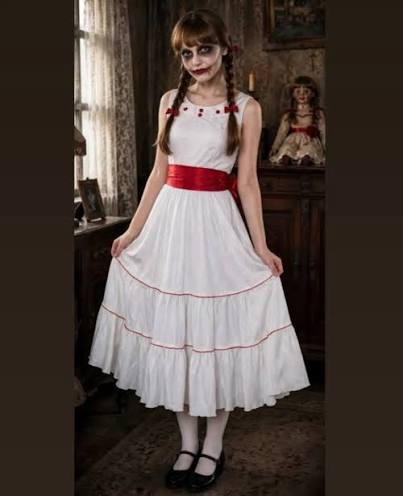
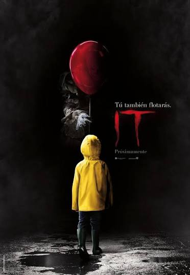

.jpg)
CLÁSICO · NIVEL 1
El fantasma errante
Ropa vieja, telas blancas gastadas y una presencia que aparece al final del pasillo.
Detalle extra: una luz fría desde abajo.
31 DE OCTUBRE · NO MIRES ATRÁS
La oscuridad tiene algo que contarte. Entrá si te atrevés… pero no prometemos que salgas igual.
Entrar en la pesadilla ↘Recomendado para valientes. Luces apagadas bajo tu propia responsabilidad.
ARCHIVOS PROHIBIDOS / 001
Ideas para disfrazarte, películas para no dormir y una última elección que quizá te arrepientas de hacer.
CATÁLOGO DE APARICIONES
CLÁSICO · NIVEL 1
Ropa vieja, telas blancas gastadas y una presencia que aparece al final del pasillo.
Detalle extra: una luz fría desde abajo.

INQUIETANTE · NIVEL 2
Vestido antiguo, maquillaje pálido y una sonrisa que parece cambiar cuando nadie mira.
Detalle extra: movimientos lentos y silenciosos.
.jpg)
PESADILLA · NIVEL 3
Ropa negra, capucha profunda y una máscara lisa sin expresión. Simple, pero perturbador.
Detalle extra: quedate inmóvil cuando te miren.
NO APAGUES LA TELE

TERROR SOBRENATURAL
Una familia comienza a experimentar fenómenos extraños en su nueva casa. Dos investigadores paranormales llegan para descubrir qué presencia se esconde entre sus paredes.
AMBIENTE OSCURO · MISTERIO
TERROR PSICOLÓGICO
Un grupo de jóvenes comienza a tener pesadillas con una figura aterradora. Pronto descubren que sus sueños esconden un peligro que parece imposible de evitar.
PESADILLAS · SUSPENSO
TERROR SOBRENATURAL
En un pequeño pueblo, varios chicos descubren que una criatura con apariencia de payaso utiliza los miedos para aterrorizar a sus habitantes.
MIEDO · MISTERIO · SUSPENSOLas películas pueden contener escenas intensas. Revisá su clasificación por edad antes de verlas.
Grabaciones inexplicables. Observá con atención... Puede que no estés viendo solo una sombra.
Una figura extraña captada al fondo de un pasillo.
Ruidos inexplicables durante una exploración nocturna.
Algo parece cruzar frente a la cámara.
Una grabación nocturna entre árboles y niebla.
EL ÚLTIMO EXPEDIENTE
Elegí con cuidado. Hay puertas que es mejor no abrir.
Tu elección te espera…